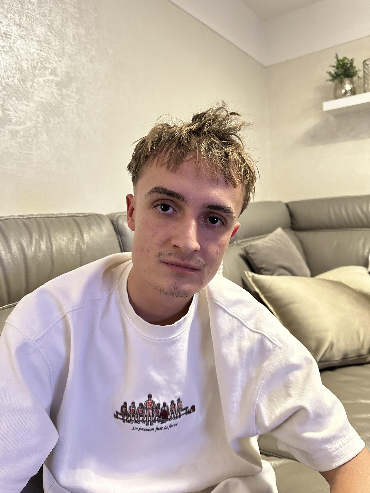

Osobné financie prehľadne. Aplikácia, ktorá mení plánovanie rozpočtu na dobrý zvyk.
Dizajn · Vývoj · Digitálne produkty
Ahoj, som
Matus Poliacek.
Navrhujem digitálne zážitky, ktoré spájajú premyslený dizajn s tým, čo ľudia naozaj potrebujú.
M
TVORÍM S ÚMYSLOM
48°08' N17°06' E
VÝBER Z TVORBY
Projekty.
Nápady, ktoré sa zmenili na
niečo skutočné.
Digitálny domov značky, ktorá pomáha ľuďom vyraziť za dobrodružstvom.
Vizuálna identita a web pre architektonické štúdio s citom pre detail.
PÁR SLOV O MNE
Dobrý dizajn
začína počúvaním.

Som dizajnér a tvorca digitálnych produktov z Bratislavy. Zložité veci rád mením na jednoduché a užitočné zážitky.
Verím v otvorenú spoluprácu, premyslené detaily a riešenia, ktoré fungujú aj dlho po odovzdaní projektu.
5+rokov skúseností
18odovzdaných projektov
100%zvedavosť